library(ggplot2)
ggplot(mpg, aes(x=displ, y=hwy)) + geom_point()
R & Statistics
Ask me anything about R, statistics concepts, or your code.
In an Business Statistics course, we teach R because it is a powerful, flexible tool widely used in business analytics for data analysis and visualization. R allows students to apply theoretical concepts to real-world datasets, enhancing their understanding through hands-on practice. Its rich ecosystem of packages, like ggplot2 for visualization and dplyr for data manipulation, makes it ideal for tackling the types of problems analysts face in the field. Additionally, R promotes reproducibility and collaboration through features like R Markdown and RStudio Projects, which align with industry standards. By learning R, students not only gain valuable technical skills but also build a strong foundation for advanced analytics and decision-making in their careers.
R is a mature, industry-standard statistical language used across academia, healthcare, finance, and data science. R scripts document exactly what was done to the data — making your analysis reproducible, auditable, and gradable.
Easily installed, state-of-the-art, and it is free and open source and supported by a well-established R Community.
R can be used with RStudio, which is a graphical user interface that allows you to do the following:
This R Community helps in the development of R resources
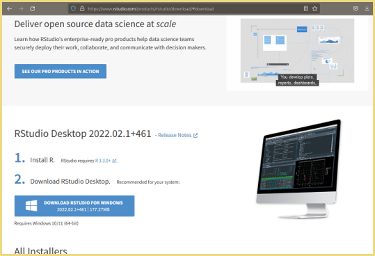
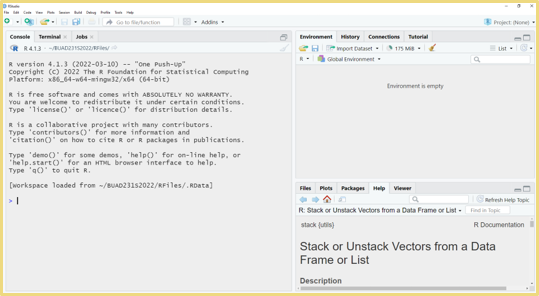
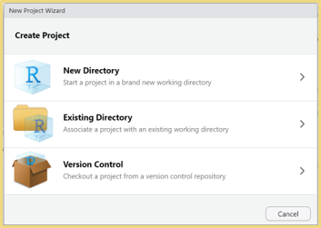
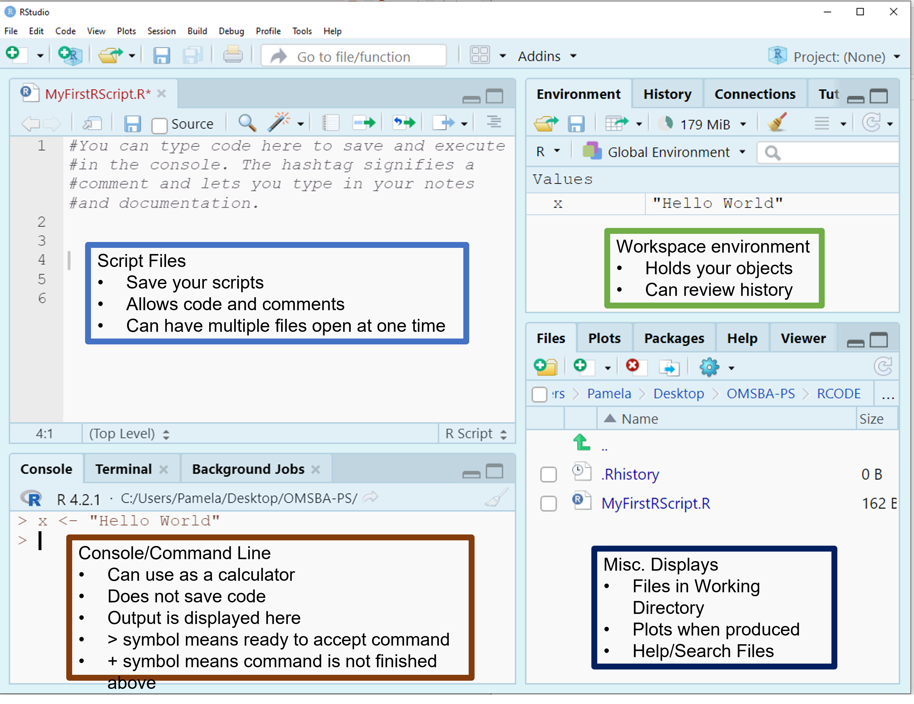
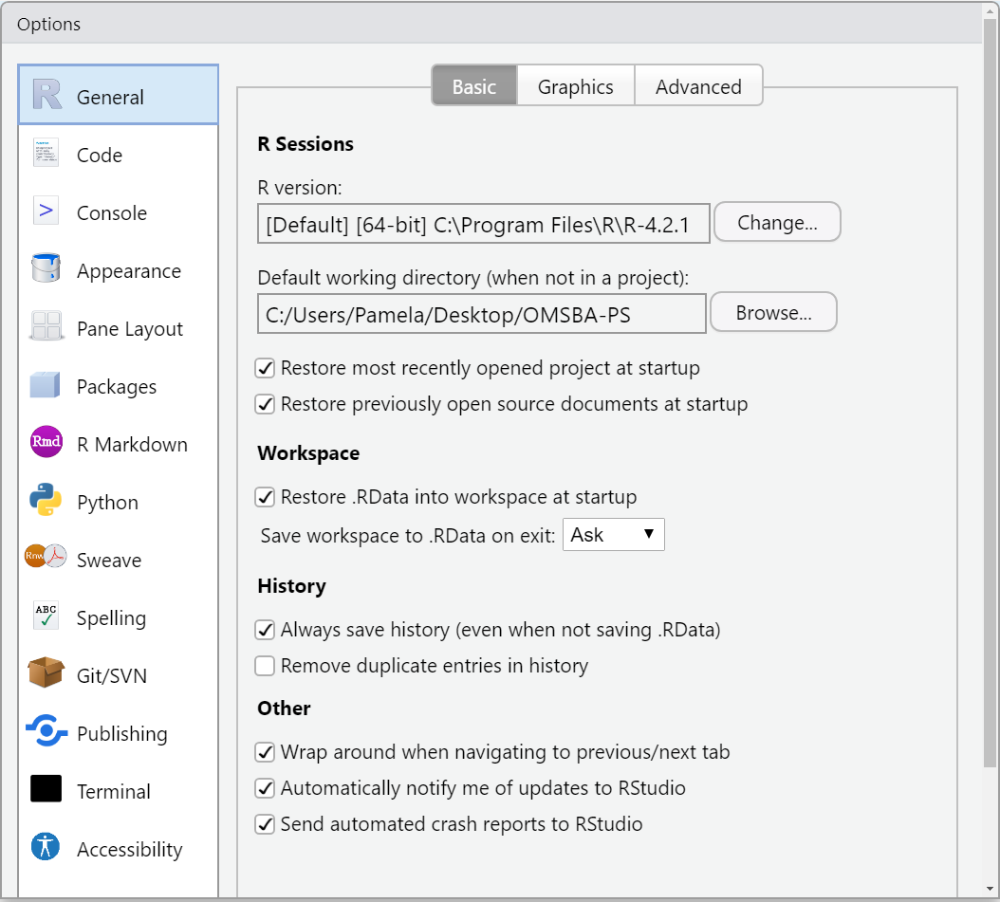
Global Options.R" class="img-fluid figure-img">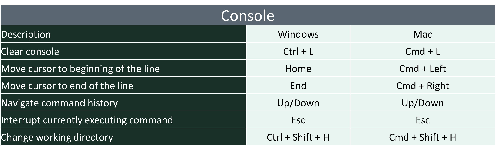
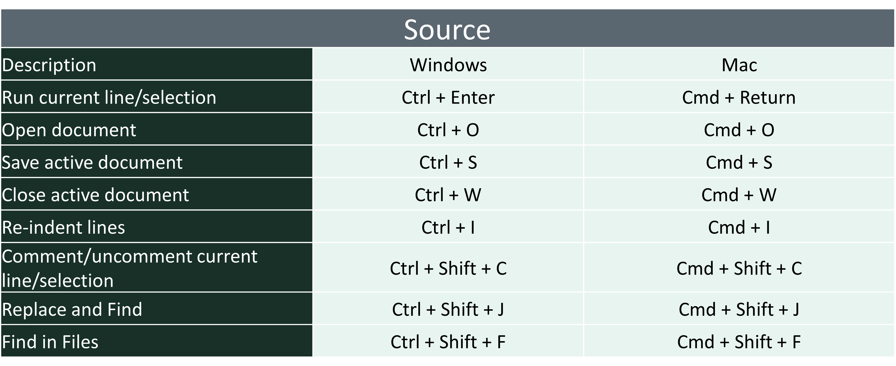
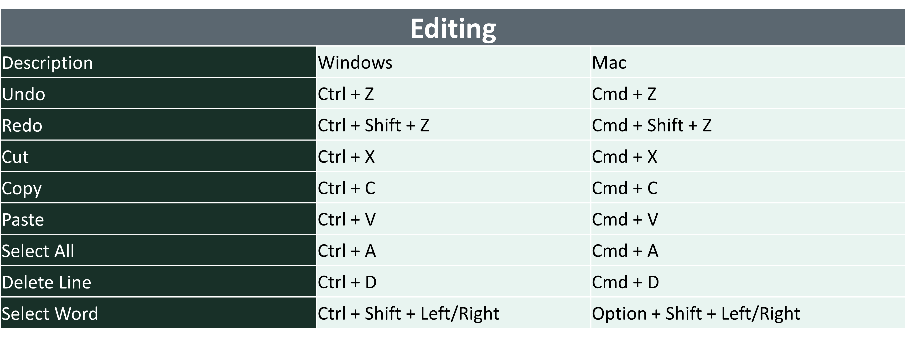
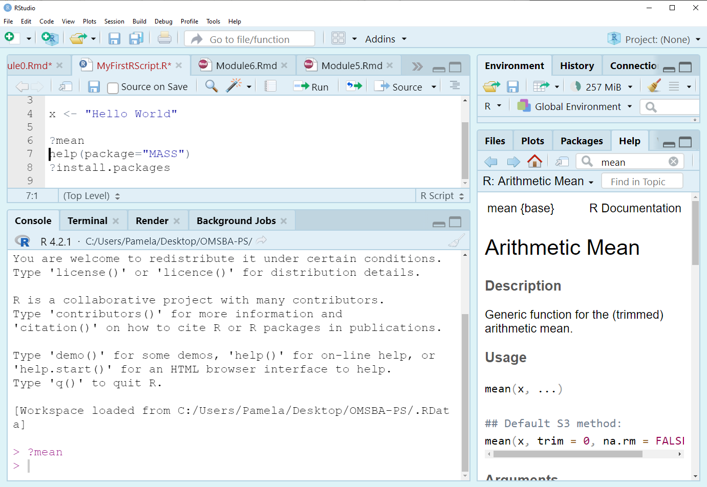
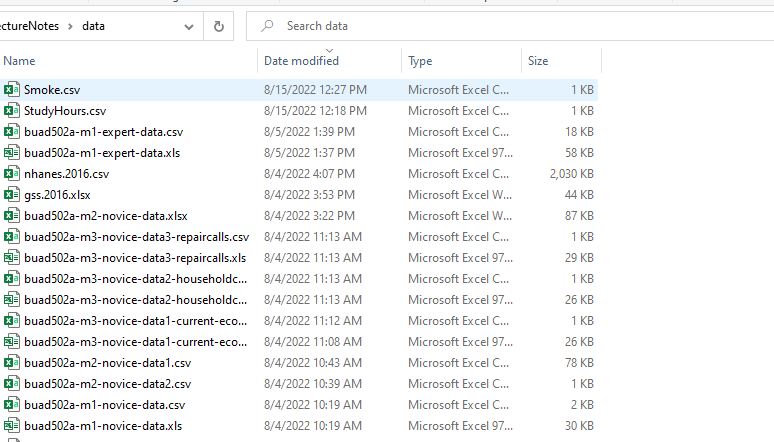
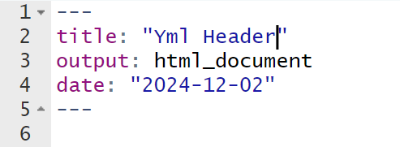
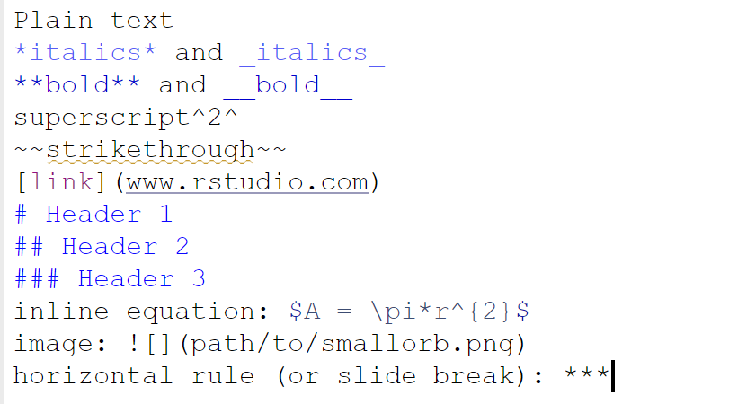
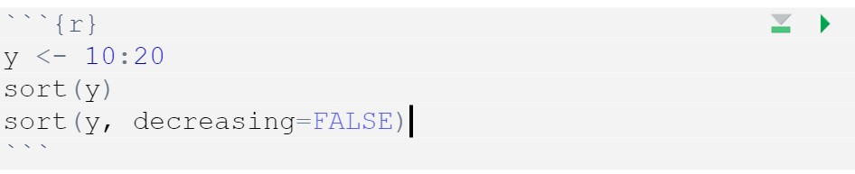
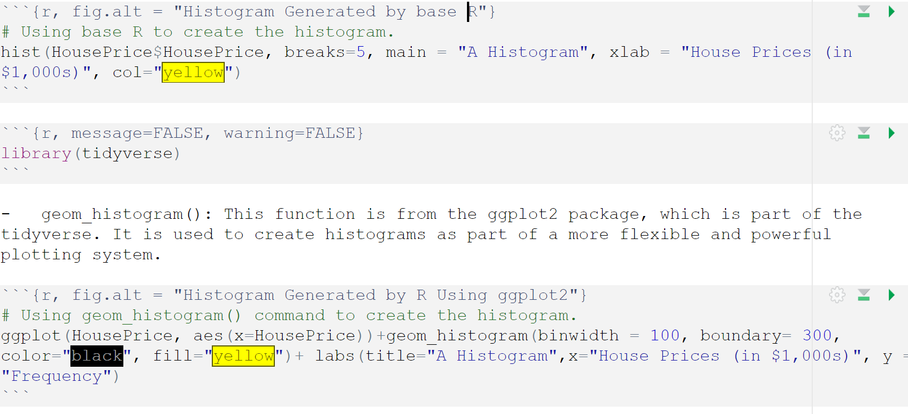
library(ggplot2) ggplot(mpg, aes(x=displ, y=hwy)) + geom_point()
library(ggplot2)
ggplot(mpg, aes(x=displ, y=hwy)) + geom_point()
You will be asked to edit an RMarkdown (.Rmd) file to process your R assignments in this course. This requires you to answer the assignment questions in .R and copy your answer to the appropriate R chunk in the .Rmd file, or answer the questions directly in the .Rmd file. To complete this process successfully, follow these steps:
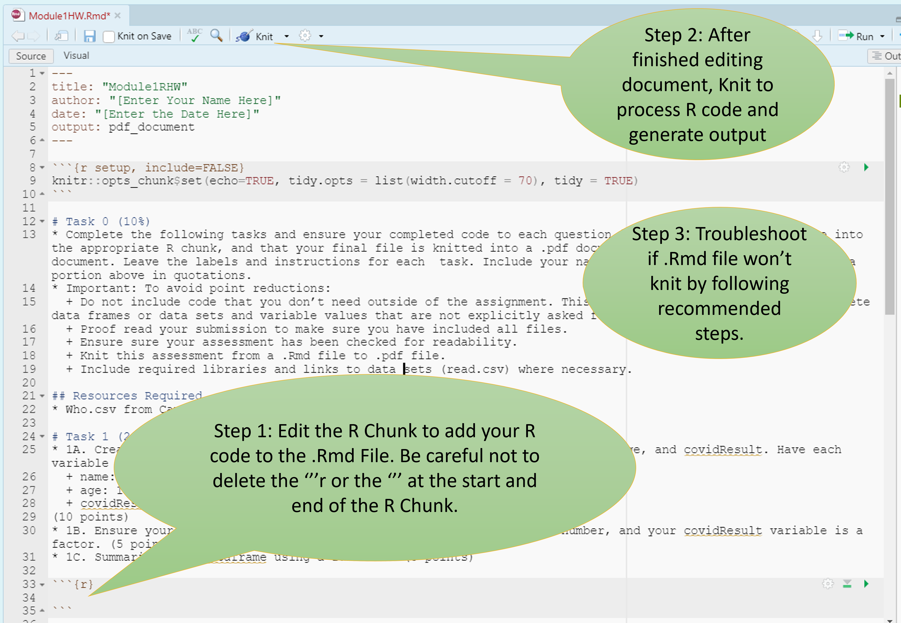
install.packages("rmarkdown")
install.packages("knitr")
install.packages("formatR")
tinytex::install_tinytex() # Select Y when/if it asks down in the console.You may only need to update one of these packages. However, since they are all connected, running these commands ensures that they are all up to date with minimal troubleshooting.
If you are having difficulty knitting to pdf, feel free to publish it in a .html and print the .html to a .pdf. I just ask that the final uploaded document with answers be a pdf. To do this, click the drop down arrow on the Knit option and select Knit to HTML.
The videos on Canvas offer a walk through of how to use RMD files successfully in this course. Understanding how to use RMD files is essential to your success on assignments in this course. Please note that these videos will not show you the specific homework questions or specific answers. The files you will see in the following videos are for demonstration purposes only. Course homework assignments change regularly, so the specific contents of the files shown in the videos will likely differ from those you will see for your assignments.
Lack of Syntax Errors:
Using Relative Links to Datasets:
Including Necessary Libraries: